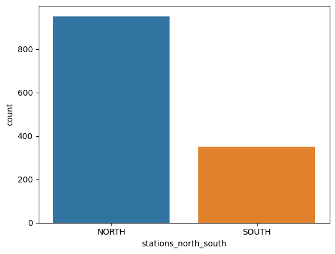
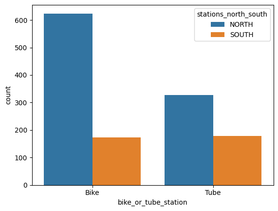

There are a combined bikes and tubes north of the river, but only in the South
There are a total of stations north of the river
There are a total of stations south of the river
There are a total of bike stations north of the river
There are a total of bike stations south of the river
Another way to visualize that is by charts:
And yet in more detail:
